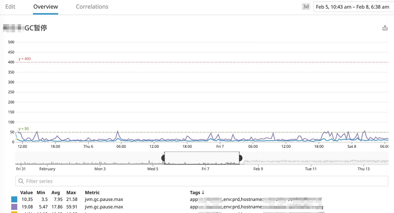
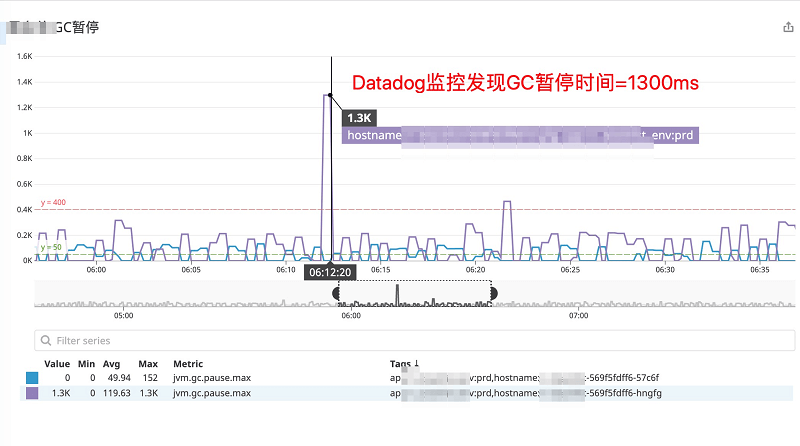

- 01 阅读此专栏的正确姿势.md.html
- 02 环境准备：千里之行，始于足下.md.html
- 03 常用性能指标：没有量化，就没有改进.md.html
- 04 JVM 基础知识：不积跬步，无以至千里.md.html
- 05 Java 字节码技术：不积细流，无以成江河.md.html
- 06 Java 类加载器：山不辞土，故能成其高.md.html
- 07 Java 内存模型：海不辞水，故能成其深.md.html
- 08 JVM 启动参数详解：博观而约取、厚积而薄发.md.html
- 09 JDK 内置命令行工具：工欲善其事，必先利其器.md.html
- 10 JDK 内置图形界面工具：海阔凭鱼跃，天高任鸟飞.md.html
- 11 JDWP 简介：十步杀一人，千里不留行.md.html
- 12 JMX 与相关工具：山高月小，水落石出.md.html
- 13 常见的 GC 算法（GC 的背景与原理）.md.html
- 14 常见的 GC 算法（ParallelCMSG1）.md.html
- 15 Java11 ZGC 和 Java12 Shenandoah 介绍：苟日新、日日新、又日新.md.html
- 16 Oracle GraalVM 介绍：会当凌绝顶、一览众山小.md.html
- 17 GC 日志解读与分析（基础配置）.md.html
- 18 GC 日志解读与分析（实例分析上篇）.md.html
- 19 GC 日志解读与分析（实例分析中篇）.md.html
- 20 GC 日志解读与分析（实例分析下篇）.md.html
- 21 GC 日志解读与分析（番外篇可视化工具）.md.html
- 22 JVM 的线程堆栈等数据分析：操千曲而后晓声、观千剑而后识器.md.html
- 23 内存分析与相关工具上篇（内存布局与分析工具）.md.html
- 24 内存分析与相关工具下篇（常见问题分析）.md.html
- 25 FastThread 相关的工具介绍：欲穷千里目，更上一层楼.md.html
- 26 面临复杂问题时的几个高级工具：它山之石，可以攻玉.md.html
- 27 JVM 问题排查分析上篇（调优经验）.md.html
- 28 JVM 问题排查分析下篇（案例实战）.md.html
- 29 GC 疑难情况问题排查与分析（上篇）.md.html
- 30 GC 疑难情况问题排查与分析（下篇）.md.html
- 31 JVM 相关的常见面试问题汇总：运筹策帷帐之中，决胜于千里之外.md.html
- 32 应对容器时代面临的挑战：长风破浪会有时、直挂云帆济沧海.md.html
- 捐赠
28 JVM 问题排查分析下篇（案例实战）
GC 问题排查实战案例
这一部分，我们来看一个实际的案例。
假设我们有一个提供高并发请求的服务，系统使用 Spring Boot 框架，指标采集使用 MicroMeter，监控数据上报给 Datadog 服务。
当然，Micrometer支 持将数据上报给各种监控系统，例如：AppOptics、Atlas、Datadog、Dynatrace、Elastic、Ganglia、Graphite、Humio、Influx、Instana、JMX、KairosDB、New Relic、Prometh eus、SignalFx、Stackdriver、StatsD、Wavefront 等等。
有关MicroMeter的信息可参考：
问题现象描述
最近一段时间，通过监控指标发现，有一个服务节点的最大 GC 暂停时间经常会达到 400ms 以上。
如下图所示：
从图中可以看到，GC 暂停时间的峰值达到了 546ms，这里展示的时间点是 2020 年 02 月 04 日 09:20:00 左右。
客户表示这种情况必须解决，因为服务调用的超时时间为 1s，要求最大 GC 暂停时间不超过 200ms，平均暂停时间达到 100ms 以内，对客户的交易策略产生了极大的影响。
CPU 负载
CPU 的使用情况如下图所示：
从图中可以看到：系统负载为 4.92，CPU使用率 7% 左右，其实这个图中隐含了一些重要的线索，但我们此时并没有发现什么问题。
GC 内存使用情况
然后我们排查了这段时间的内存使用情况：
从图中可以看到，大约 09:25 左右 old_gen 使用量大幅下跌，确实是发生了 FullGC。
但 09:20 前后，老年代空间的使用量在缓慢上升，并没有下降，也就是说引发最大暂停时间的这个点并没有发生 FullGC。
当然，这些是事后复盘分析得出的结论。当时对监控所反馈的信息并不是特别信任，怀疑就是触发了 FullGC 导致的长时间 GC 暂停。
为什么有怀疑呢，因为 Datadog 这个监控系统，默认 10s 上报一次数据。有可能在这 10s 内发生些什么事情但是被漏报了（当然，这是不可能的，如果上报失败会在日志系统中打印相关的错误）。
再分析上面这个图，可以看到老年代对应的内存池是 “ps_old_gen”，通过前面的学习，我们知道，ps 代表的是 ParallelGC 垃圾收集器。
JVM 启动参数
查看 JVM 的启动参数，发现是这样的：
-Xmx4g -Xms4g
我们使用的是 JDK 8，启动参数中没有指定 GC，确定这个服务使用了默认的并行垃圾收集器。
于是怀疑问题出在这款垃圾收集器上面，因为很多情况下 ParallelGC 为了最大的系统处理能力，即吞吐量，而牺牲掉了单次的暂停时间，导致暂停时间会比较长。
使用 G1 垃圾收集器
怎么办呢？准备换成 G1，毕竟现在新版本的 JDK 8 中 G1 很稳定，而且性能不错。
然后换成了下面的启动参数：
# 这个参数有问题，启动失败
-Xmx4g -Xms4g -XX:+UseG1GC -XX:MaxGCPauseMills=50ms
结果启动失败，忙中出错，参数名和参数值都写错了。
修正如下：
-Xmx4g -Xms4g -XX:+UseG1GC -XX:MaxGCPauseMillis=50
接着服务启动成功，等待健康检测自动切换为新的服务节点，继续查看指标。

看看暂停时间，每个节点的 GC 暂停时间都降下来了，基本上在 50ms 以内，比较符合我们的预期。
嗯！事情到此结束了？远远没有。
“彩蛋”惊喜
过了一段时间，我们发现了个下面这个惊喜（也许是惊吓），如下图所示：

中奖了，运行一段时间后，最大 GC 暂停时间达到了 1300ms。
情况似乎更恶劣了。
继续观察，发现不是个别现象：
内心是懵的，觉得可能是指标算错了，比如把 10s 内的暂停时间全部加到了一起。
注册 GC 事件监听
于是想了个办法，通过 JMX 注册 GC 事件监听，把相关的信息直接打印出来。
关键代码如下所示：
// 每个内存池都注册监听
for (GarbageCollectorMXBean mbean
: ManagementFactory.getGarbageCollectorMXBeans()) {
if (!(mbean instanceof NotificationEmitter)) {
continue; // 假如不支持监听...
}
final NotificationEmitter emitter = (NotificationEmitter) mbean;
// 添加监听
final NotificationListener listener = getNewListener(mbean);
emitter.addNotificationListener(listener, null, null);
}
通过这种方式，我们可以在程序中监听 GC 事件，并将相关信息汇总或者输出到日志。 具体的实现代码在后面的章节《应对容器时代面临的挑战》中给出。
再启动一次，运行一段时间后，看到下面这样的日志信息：
{
"duration":1869,
"maxPauseMillis":1869,
"promotedBytes":"139MB",
"gcCause":"G1 Evacuation Pause",
"collectionTime":27281,
"gcAction":"end of minor GC",
"afterUsage":
{
"G1 Old Gen":"1745MB",
"Code Cache":"53MB",
"G1 Survivor Space":"254MB",
"Compressed Class Space":"9MB",
"Metaspace":"81MB",
"G1 Eden Space":"0"
},
"gcId":326,
"collectionCount":326,
"gcName":"G1 Young Generation",
"type":"jvm.gc.pause"
}
情况确实有点不妙。
这次实锤了，不是 FullGC，而是年轻代 GC，而且暂停时间达到了 1869ms。 一点道理都不讲，我认为这种情况不合理，而且观察 CPU 使用量也不高。
找了一大堆资料，试图证明这个 1869ms 不是暂停时间，而只是 GC 事件的结束时间减去开始时间。
打印 GC 日志
既然这些手段不靠谱，那就只有祭出我们的终极手段：打印 GC 日志。
修改启动参数如下：
-Xmx4g -Xms4g -XX:+UseG1GC -XX:MaxGCPauseMillis=50
-Xloggc:gc.log -XX:+PrintGCDetails -XX:+PrintGCDateStamps
重新启动，希望这次能排查出问题的原因。
运行一段时间，又发现了超长的暂停时间。
分析 GC 日志
因为不涉及敏感数据，那么我们把 GC 日志下载到本地进行分析。
定位到这次暂停时间超长的 GC 事件，关键的信息如下所示：
Java HotSpot(TM) 64-Bit Server VM (25.162-b12) for linux-amd64 JRE (1.8.0_162-b12),
built on Dec 19 2017 21:15:48 by "java_re" with gcc 4.3.0 20080428 (Red Hat 4.3.0-8)
Memory: 4k page, physical 144145548k(58207948k free), swap 0k(0k free)
CommandLine flags:
-XX:InitialHeapSize=4294967296 -XX:MaxGCPauseMillis=50 -XX:MaxHeapSize=4294967296
-XX:+PrintGC -XX:+PrintGCDateStamps -XX:+PrintGCDetails -XX:+PrintGCTimeStamps
-XX:+UseCompressedClassPointers -XX:+UseCompressedOops -XX:+UseG1GC
2020-02-24T18:02:31.853+0800: 2411.124: [GC pause (G1 Evacuation Pause) (young), 1.8683418 secs]
[Parallel Time: 1861.0 ms, GC Workers: 48]
[GC Worker Start (ms): Min: 2411124.3, Avg: 2411125.4, Max: 2411126.2, Diff: 1.9]
[Ext Root Scanning (ms): Min: 0.0, Avg: 0.3, Max: 2.7, Diff: 2.7, Sum: 16.8]
[Update RS (ms): Min: 0.0, Avg: 3.6, Max: 6.8, Diff: 6.8, Sum: 172.9]
[Processed Buffers: Min: 0, Avg: 2.3, Max: 8, Diff: 8, Sum: 111]
[Scan RS (ms): Min: 0.0, Avg: 0.2, Max: 0.5, Diff: 0.5, Sum: 7.7]
[Code Root Scanning (ms): Min: 0.0, Avg: 0.0, Max: 0.1, Diff: 0.1, Sum: 0.3]
[Object Copy (ms): Min: 1851.6, Avg: 1854.6, Max: 1857.4, Diff: 5.8, Sum: 89020.4]
[Termination (ms): Min: 0.0, Avg: 0.0, Max: 0.0, Diff: 0.0, Sum: 0.6]
[Termination Attempts: Min: 1, Avg: 1.0, Max: 1, Diff: 0, Sum: 48]
[GC Worker Other (ms): Min: 0.0, Avg: 0.3, Max: 0.7, Diff: 0.6, Sum: 14.7]
[GC Worker Total (ms): Min: 1858.0, Avg: 1859.0, Max: 1860.3, Diff: 2.3, Sum: 89233.3]
[GC Worker End (ms): Min: 2412984.1, Avg: 2412984.4, Max: 2412984.6, Diff: 0.5]
[Code Root Fixup: 0.0 ms]
[Code Root Purge: 0.0 ms]
[Clear CT: 1.5 ms]
[Other: 5.8 ms]
[Choose CSet: 0.0 ms]
[Ref Proc: 1.7 ms]
[Ref Enq: 0.0 ms]
[Redirty Cards: 1.1 ms]
[Humongous Register: 0.1 ms]
[Humongous Reclaim: 0.0 ms]
[Free CSet: 2.3 ms]
[Eden: 2024.0M(2024.0M)->0.0B(2048.0K)
Survivors: 2048.0K->254.0M
Heap: 3633.6M(4096.0M)->1999.3M(4096.0M)]
[Times: user=1.67 sys=14.00, real=1.87 secs]
前后的 GC 事件都很正常，也没发现 FullGC 或者并发标记周期，但找到了几个可疑的点。
physical 144145548k(58207948k free)：JVM 启动时，物理内存 137GB，空闲内存 55GB。[Parallel Time: 1861.0 ms, GC Workers: 48]：垃圾收集器工作线程 48 个。
我们前面的课程中学习了怎样分析 GC 日志，一起来回顾一下。
user=1.67：用户线程耗时 1.67s；sys=14.00：系统调用和系统等待时间 14s；real=1.87 secs：实际暂停时间 1.87s；- GC 之前，年轻代使用量 2GB，堆内存使用量 3.6GB，存活区 2MB，可推断出老年代使用量 1.6GB；
- GC 之后，年轻代使用量为 0，堆内存使用量 2GB，存活区 254MB，那么老年代大约 1.8GB，那么“内存提升量为 200MB 左右”。
这样分析之后，可以得出结论：
- 年轻代转移暂停，复制了 400MB 左右的对象，却消耗了 1.8s，系统调用和系统等待的时间达到了 14s。
- JVM 看到的物理内存 137GB。
- 推算出 JVM 看到的 CPU 内核数量 72个，因为 GC 工作线程
72* 5/8 ~= 48个。
看到这么多的 GC 工作线程我就开始警惕了，毕竟堆内存才指定了 4GB。
按照一般的 CPU 和内存资源配比，常见的比例差不多是 4 核 4GB、4 核 8GB 这样的。
看看对应的 CPU 负载监控信息：
通过和运维同学的沟通，得到这个节点的配置被限制为 4 核 8GB。
这样一来，GC 暂停时间过长的原因就定位到了：
- K8S 的资源隔离和 JVM 未协调好，导致 JVM 看见了 72 个 CPU 内核，默认的并行 GC 线程设置为
72* 5/8 ~= 48 个，但是 K8S 限制了这个 Pod 只能使用 4 个 CPU 内核的计算量，致使 GC 发生时，48 个线程在 4 个 CPU 核心上发生资源竞争，导致大量的上下文切换。
处置措施为：
- 限制 GC 的并行线程数量
事实证明，打印 GC 日志确实是一个很有用的排查分析方法。
限制 GC 的并行线程数量
下面是新的启动参数配置：
-Xmx4g -Xms4g
-XX:+UseG1GC -XX:MaxGCPauseMillis=50 -XX:ParallelGCThreads=4
-Xloggc:gc.log -XX:+PrintGCDetails -XX:+PrintGCDateStamps
这里指定了 -XX:ParallelGCThreads=4，为什么这么配呢？我们看看这个参数的说明。
-XX:ParallelGCThreads=n
设置 STW 阶段的并行 worker 线程数量。 如果逻辑处理器小于等于 8 个，则默认值 n 等于逻辑处理器的数量。
如果逻辑处理器大于 8 个，则默认值 n 大约等于处理器数量的 5/8。在大多数情况下都是个比较合理的值。如果是高配置的 SPARC 系统，则默认值 n 大约等于逻辑处理器数量的 5/16。
-XX:ConcGCThreads=n
设置并发标记的 GC 线程数量。默认值大约是 ParallelGCThreads 的四分之一。
一般来说不用指定并发标记的 GC 线程数量，只用指定并行的即可。
重新启动之后，看看 GC 暂停时间指标：
红色箭头所指示的点就是重启的时间点，可以发现，暂停时间基本上都处于 50ms 范围内。
后续的监控发现，这个参数确实解决了问题。
那么还有没有其他的办法呢？请关注后续的章节《应对容器时代面临的挑战》。
小结
通过这个案例，我们可以看到，JVM 问题排查和性能调优主要基于监控数据来进行。
还是那句话：没有量化，就没有改进。
简单汇总一下这里使用到的手段：
- 指标监控
- 指定 JVM 启动内存
- 指定垃圾收集器
- 打印和分析 GC 日志
GC 和内存是最常见的 JVM 调优场景，还记得课程开始时我们介绍的 GC 的性能维度吗？
- 延迟，GC 中影响延迟的主要因素就是暂停时间。
- 吞吐量，主要看业务线程消耗的 CPU 资源百分比，GC 占用的部分包括：GC 暂停时间，以及高负载情况下并发 GC 消耗的 CPU 资源。
- 系统容量，主要说的是硬件配置，以及服务能力。
只要这些方面的指标都能够满足，各种资源占用也保持在合理范围内，就达成了我们的预期。
参考
© 2019 - 2023 Liangliang Lee. Powered by gin and hexo-theme-book.